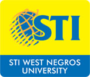
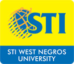

Given the national reach of STI ESG, the company has taken upon itself to uphold socially responsible activities that are aimed to better the communities that individual campuses belong to, and at the same time, develop a positive environment that will be beneficial to all stakeholders.
The STI Foundation aims to contribute to the improvement of the country’s educational system through programs and projects that address the digital divide and promote excellence in education.
In SY 2010-11, the STI Foundation was awarded the Seal of Good Housekeeping by the Philippine Council of NGO Certification. The 3-year accreditation seals the STI Foundation’s credibility as a Bureau of the Internal Revenue (“BIR”) certified Donee Institution that has met the criteria of fiscal management and accountability in the service to underprivileged Filipinos.
Underscoring the efforts to improve corporate governance practices, the STI Foundation was also granted a registration certificate as an Auxiliary Social Welfare and Development Agency by the Department of Social Welfare and Development (“DSWD”). This is in line with the Republic Act 4373 that requires NGOs utilizing social work methods and interventions to secure a license from the DSWD before they can operate as a social work/social welfare and development agency.
Set towards inspiring the youth to actively stay informed with the current issues, STI partnered with the Department of Education (“DepEd”) and the National Youth Commission (“NYC”) for the Voice of the Youth (“VOTY”) – National Oratorical Competition. This advocacy serves as a platform to encourage the students to fluently express their views in English for global competency as well as develop critical thinking through the art of public speaking.
Since SY 2010-11, more than PhP2 Million worth of prizes were awarded every year to the winners, their coaches, and their respective schools. In SY 2010-11, 494 high schools from Luzon, Visayas, and Mindanao joined the competition. The participating high schools then jumped to 676 in SY 2011-12 while 660 high schools participated in this nationwide competition for SY 2012-13.
In SY 2012-13, VOTY joined the 4th PANATA Awards and received the Bronze Award under the Cause Marketing – Special Events category as the Philippine Association of National Advertisers recognized its goal to promote positive Filipino values.
In SY 2013-14, more than PhP1.6 Million worth of prizes were awarded every year to the winners, their coaches, and their respective schools. Likewise, there were 660 high schools from Luzon, Visayas, and Mindanao who joined the competition.
The advocacy also won an Award of Merit under the Advocacy Communications category of the Philippine Quill Awards organized by the International Association of Business Communicators (“IABC”) Philippines. The Philippine Quill Awards is the local counterpart of IABC’s Gold Quill Awards, joined in by the world’s biggest corporations and agencies, and regarded as the highest standard in business communication.
The STI Mobile School is a tourist-sized bus that has been converted into a roving computer laboratory. It is equipped with a state-of-the-art computer laboratory with internet access, multimedia computers, LCD monitors, sound system, and other top-of-the-line computer equipment.
Since SY 2010-11, the STI Mobile School has travelled to 872 sites and trained 105,218 participants nationwide. Today, a total of six mobile school buses travel across Luzon, Visayas, and Mindanao.
To provide educational opportunities to deserving individuals who have no means to pursue a post-secondary education, STI, through the STI Foundation, strengthens its partnership with various TV programs from different TV networks. There were 76 scholars registered from the TV programs in SY 2010-11. In SY 2011-12 there were 113 scholars, and in SY 2012-13, 63 scholars received support from STI and partner TV programs.
Since SY 2010-11, STI ESG has supported the advocacy of ABS-CBN Foundation’s Kapit Bisig Para sa Ilog Pasig, which aims to raise awareness and funds for the rehabilitation of Ilog Pasig and the esteros connected to it. In SY 2013-14, the Run for Pasig, dubbed as One Run, One Philippines, was a simultaneous eco-run held in different key locations nationwide namely Quezon City, Cebu, Bacolod, Davao, and in Los Angeles, USA.
14 STI Colleges in Metro Manila (Alabang, Caloocan, Cubao, Shaw, Fairview, Global City, Las Piñas, Makati, Muñoz-EDSA, Novaliches, Parañaque, Quezon Avenue, Recto, and Taft) mobilized 5,632 STIers in SY 2010-11 and 5,391 participants in SY 2011-12. In SY 2012-13, STI College Ortigas-Cainta joined for the first time and added to the strong number of 11,240 students, faculty members, and staff. Thus, STI was recognized as the school with the largest contingent based on CHED data.
21 STI Colleges in Metro Manila, Visayas, and Mindanao (Alabang, Caloocan, Cubao, Fairview, Global City, Las Piñas, Makati, Marikina, Muñoz-EDSA, Novaliches, Parañaque, Pasay, Quezon Avenue, Recto, Shaw, Taft, Ortigas-Cainta, Bacolod, Cebu, Davao, and Tagum) mobilized 13,672 students, faculty members, and staff to participate in the 3k category in SY 2013-14.
STI’s partnership with ABS-CBN started in 1998 and has now spanned for more than a decade which included five national polls.
In SY 2010-11, STI worked with ABS-CBN once again in conducting parallel counts based on the election returns gathered from all over the country. As the Philippines held its first ever national automated elections, thousands of students, faculty members, and staff answered the call for volunteerism and remained vigilant throughout the national and local elections.
In SY 2013-14, STI partnered once again with ABS-CBN for the 2013 national elections. Thousands of students, faculty members, and staff heeded the call to become Bayan Patrollers. The STI volunteers were tasked to be the key content aggregators wherein they received and verified reports from the Bayan Patrollers through face-to-face interviews and various media platforms.
In SY 2010-11, STI joined DZMM and DSWD in Takbo Para sa Karunungan which helped out 25 deserving young scholars, who were affected by Typhoon Ondoy, with their day-to-day school expenses. STI was also awarded with the Biggest School Contingent award in the 5k category. The partnership continued to SY 2011-12 with ABS-CBN Integrated Public Service also joining the group. This time, STI also donated school supplies to the 75 beneficiaries from Metro Manila, Cagayan de Oro, and Iligan City who were victims of Typhoons Ondoy and Sendong.
At the height of the calamity that struck the country during SY 2013-14, STI ESG and its campuses, STI Alumni Association, and STI Foundation pooled together resources to assist in the rebuilding efforts for the families devastated by the Super Typhoon Yolanda.
A total of PhP1.185 Million, both cash and in-kind donations, were collected wherein a portion was used to help the affected STI ESG campuses in Tacloban, Ormoc, Kalibo, and Iloilo.
The English Department of WNU extends its expertise in TESOL in Puroks/Barangays where out-of-school youth, willing mothers and pupils need extra help in English. This is done on weekends and extends until December when a joint culminating and Christmas activity takes place. The English teachers take turns in teaching these young people and their mothers English for Speakers of Other Languages (ESOL).
WNU continues to extend outreach activities to its adopted community in Purok Tunggoy, Mandalagan, Bacolod City and an adopted school in Granada, Bacolod City, specifically, VAGRES (Vista Alegre Granada Relocation Elementary School).
STI will actively participate in a life changing intervention providing sustainable access to education to the poor and marginalized children in Makati, Pasay and Manila through the Child Sponsorship Program of CFC Ancop Tekton Foundation, Inc., a BIR registered donee institution.
STI Holdings supported the community outreach program of the Junior Chamber International Philippines (JCIP) Ortigas, which will benefit the underprivileged children under the care of The Orange Project.
The Orange Project supports deserving underprivileged children of Angono, Rizal. The project’s goal is to forge partnerships with organizations and raise P500.00 for every child, which will give them access to education, healthcare, and character formation. The project currently cares for around 800 children from the indigent families in Angono.
JCIP Ortigas Chapter has always been involved in community building activities through various programs and has always put focus in education and health. They solicited the support of several private organizations to help The Orange Project’s education, health, and livelihood activities. STI Holdings and its affiliate companies, STI Education Systems Group and PhilCare, were among the first to pitch in their support. STI led the Project: Library, Education & Skills Enhancement (P.L.E.A.S.E) program where it donated the first four computers for The Orange Project’s computer laboratory, while PhilCare led the Dengue prevention efforts.
The advocacy is aligned with what STI Holdings believes in – that every Filipino should be empowered through Education. Through this project, STI Holdings and its affiliate companies were able to do their share for the community by paving the way for some underprivileged children to access education and healthcare.
STI Holdings also supported the “Fund Raising to Combat Malaria” Project of JCI Philippines, Inc.


 
